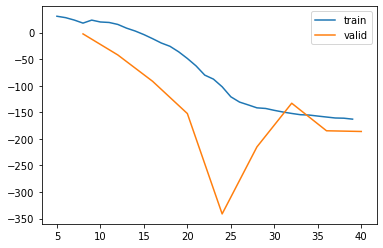

%load_ext autoreload
%autoreload 2from meteo_imp.kalman.fastai import *
from meteo_imp.kalman.filter import *
from meteo_imp.utils import *
from meteo_imp.data import *
from fastai.tabular.learner import *
from fastai.learner import *
from fastai.callback.all import *@cache_disk("full_hai")
def load_data():
return read_fluxnet_csv(hai_path, None)
hai = load_data()model = KalmanFilter(n_dim_state = hai.shape[1], n_dim_obs=hai.shape[1])more sensible default to the obs_cov
model._set_constraint('obs_cov', model.obs_cov * 1e-1, train=True)model.obs_covtensor([[0.1000, 0.0000, 0.0000],
[0.0000, 0.1000, 0.0000],
[0.0000, 0.0000, 0.1000]], grad_fn=<AddBackward0>)obs_cov_history = SaveParams('obs_cov')dls = make_dataloader(hai[:10_000], 200, 10, bs=10) learn = Learner(dls, model, loss_func=imp_ll_loss, cbs=[obs_cov_history])learn.fit(10, 5e-3)| epoch | train_loss | valid_loss | time |
|---|---|---|---|
| 0 | 37.007156 | 35.707901 | 00:42 |
| 1 | 23.424786 | -2.581818 | 00:46 |
| 2 | 18.935411 | -42.146591 | 00:45 |
| 3 | -3.875268 | -91.679558 | 00:45 |
| 4 | -36.274509 | -152.389908 | 00:45 |
| 5 | -87.641487 | -341.147583 | 00:50 |
| 6 | -136.136597 | -215.108154 | 00:46 |
| 7 | -149.517105 | -132.968475 | 00:50 |
| 8 | -157.112869 | -184.785660 | 00:50 |
| 9 | -162.912567 | -186.101288 | 00:45 |
/home/simone/Documents/uni/Thesis/GPFA_imputation/meteo_imp/kalman/filter.py:193: UserWarning: Matrix is not positive definite
warn("Matrix is not positive definite")
/home/simone/Documents/uni/Thesis/GPFA_imputation/meteo_imp/kalman/filter.py:193: UserWarning: Matrix is not positive definite
warn("Matrix is not positive definite")
/home/simone/Documents/uni/Thesis/GPFA_imputation/meteo_imp/kalman/filter.py:193: UserWarning: Matrix is not positive definite
warn("Matrix is not positive definite")
/home/simone/Documents/uni/Thesis/GPFA_imputation/meteo_imp/kalman/filter.py:193: UserWarning: Matrix is not positive definite
warn("Matrix is not positive definite")
/home/simone/Documents/uni/Thesis/GPFA_imputation/meteo_imp/kalman/filter.py:193: UserWarning: Matrix is not positive definite
warn("Matrix is not positive definite")learn.recorder.plot_loss()
len(obs_cov_history.params)50obs_cov_history.params[-1]tensor([[ 0.0599, -0.0294, -0.0294],
[-0.0294, 0.0598, -0.0292],
[-0.0294, -0.0292, 0.0598]])is_posdef2(obs_cov_history.params[-1])(True, tensor([0.0012, 0.0890, 0.0893]))posdef_logtrained_state = learn.model.state_dict()Results
from meteo_imp.data_preparation import MeteoDataTest
from meteo_imp.kalman.imputation import KalmanImputationdef gap2res(var_sel, gap_len, gap_start, block_start=1000, block_end=1200):
data = MeteoDataTest(hai.iloc[block_start:block_end, :]).add_gap(gap_len, var_sel, gap_start)
imp = KalmanImputation(data.data)
imp.model.filter.load_state_dict(trained_state)
return imp.to_result(data.data_compl_tidy, var_names= data.data.columns, units=units, pred_all=True)data = MeteoDataTest(hai)var_sel = data.data.columns%time gap2res(var_sel, 10, 10)CPU times: user 4.42 s, sys: 58.9 ms, total: 4.48 s
Wall time: 749 msImputation Result:
N obs: 200gaps = [2, 5, 7, 10, 20, 30, 50, 100]
gap_starts = [0, 30, 60, 90]from ipywidgets import interact_manual, IntSlider